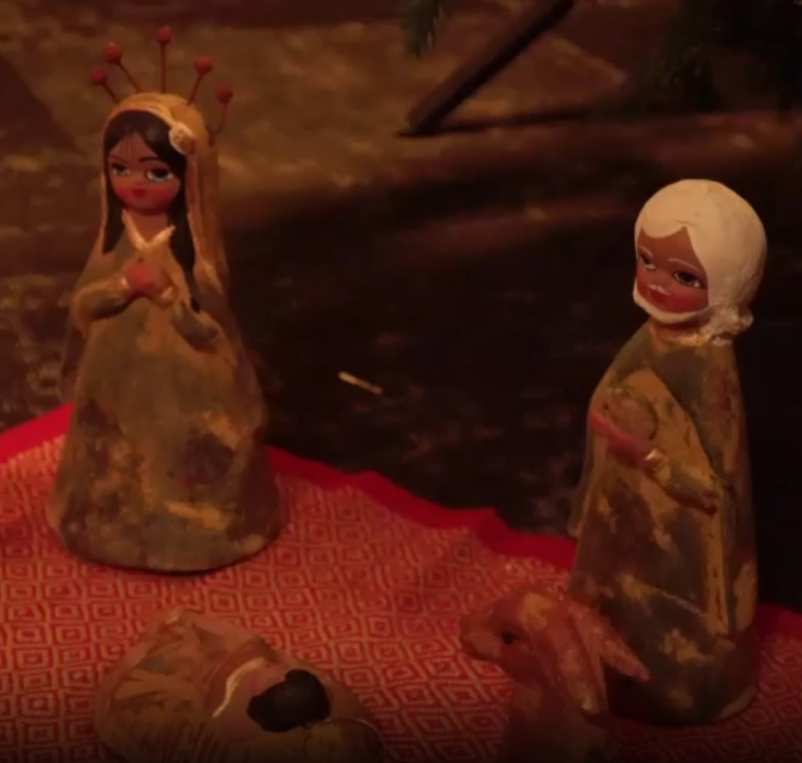

KRO-NCRV · Internship
Christmas video · 2025
ABOUT THIS PROJECT
For the Christmas celebration of KRO-NCRV, the other intern and I were asked to work on a video that tells the biblical Christmas story in a fun and engaging way.
My tasks for this video were:
– Filming
– Editing
– Lighting
Together we shaped a playful yet respectful retelling of the nativity story, bringing the classic tale to life with a fresh, contemporary visual language.

PROJECT MEDIA
The Christmas story, told in a playful way for KRO-NCRV
The Christmas story, told in a playful way for KRO-NCRV
The Christmas story, told in a playful way for KRO-NCRV